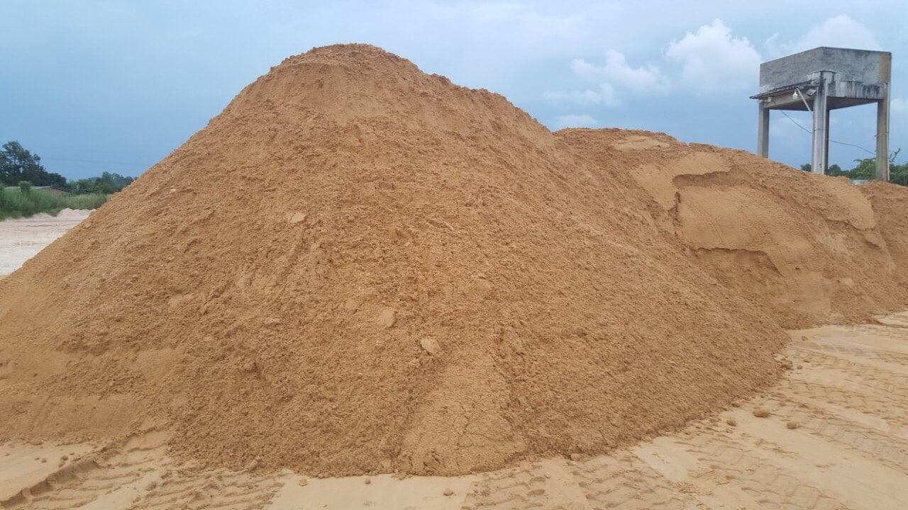
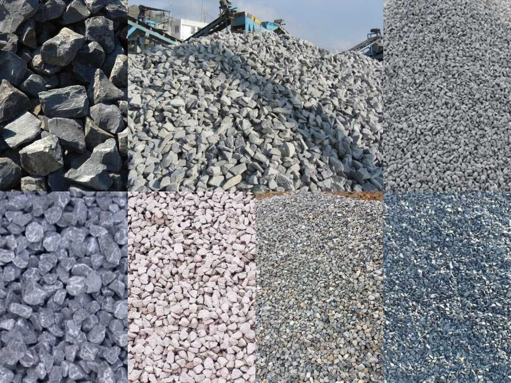
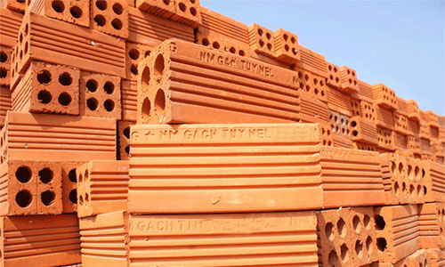
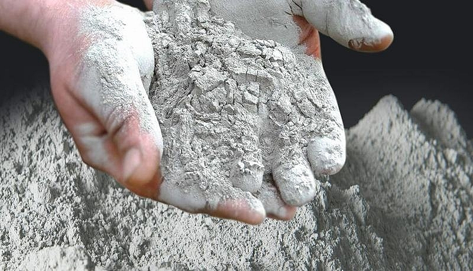
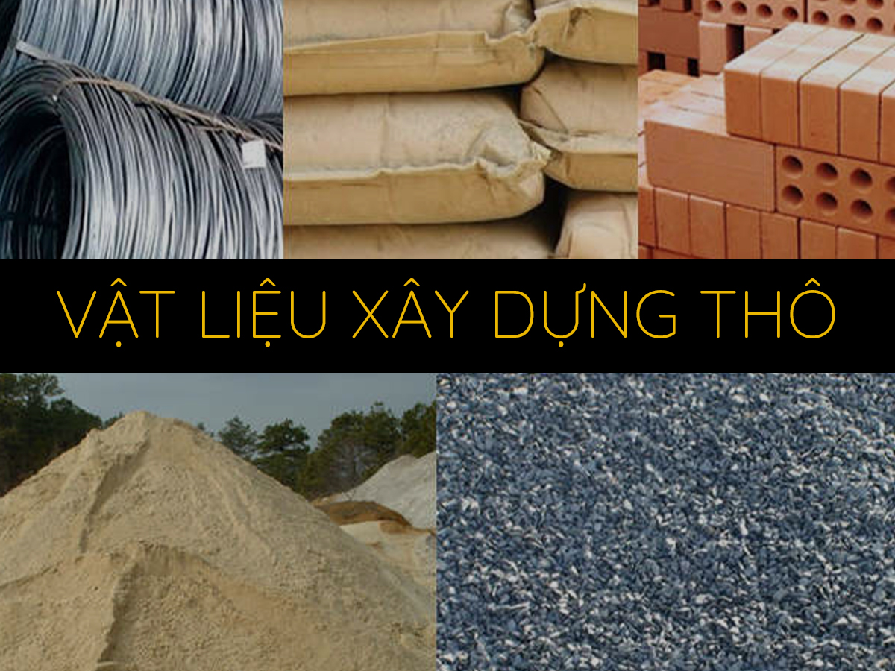

Trong chúng ta có lẽ đã từng ít nhất một lần nghe đến cụm từ vật liệu xây dựng thô. Nhưng không phải ai cũng biết chúng bao gồm những loại vật liệu gì. Đừng lo lắng, bài viết dưới đây của chúng tôi sẽ giúp bạn có được câu trả lời. Hãy cùng chúng tôi tìm hiểu về vật liệu xây dựng thô ngay nhé!
VẬT LIỆU XÂY DỰNG THÔ
| Số thứ tự | Hạng mục | Vật liệu | Hình ảnh minh họa | Ứng dụng |
|---|---|---|---|---|
| 1 | Nhà ở, Biệt thự | Sắt thép | Vật liệu sắt thép nắm giữ vai trò đặc biệt quan trọng, chúng được ví như bộ khung xương của cả công trình. | |
| 2 | Nhà ở, Biệt thự | Cát xây dựng |  | Trong kiến trúc xây dựng, họ cho rằng việc lựa chọn cát mịn để đổ bê tông sẽ giúp cường độ bê tông giảm 30% |
| 3 | Nhà ở, Biệt thự | Đá xây dựng |  | Đá có công dụng để rải nền hoặc con người có thể sử dụng kết hợp với xi măng, tạo thành những khối bê tông vững chắc. Tuỳ vào mục đích sử dụng khác nhau mà con người có thể kết hợp để tạo ra hỗn hợp khác nhau. |
| 4 | Nhà ở, Biệt thự | Gạch xây dựng |  | Những viên gạch khi liên kết với nhau bằng hỗn hợp hồ sẽ tạo thành một lớp bao che cho cả công trình. Bên cạnh đó, gạch còn có khả năng chống thấm, chống ẩm và có tính cách âm và cách nhiệt. |
| 5 | Nhà ở, Biệt thự | Xi măng xây dựng |  | Xi măng là loại nguyên liệu được sử dụng trong quá trình tạo nên chất kết dính, giúp cho công tác xây, trát, đổ bê tông được diễn ra thuận lợi. |
Vật liệu xây dựng thô
1. Vật liệu xây dựng thô là gì?

Trong xây dựng, vật liệu thô giữ vai trò quan trọng của tất cả các công trình. Người ta thường sử dụng vật liệu xây dựng thô để tạo nên phần nền móng vững chắc, giúp định hình khuôn cho ngôi nhà.
Do đó, khi chúng ta tạo được phần thô càng vững chắc thì ngôi nhà cũng sẽ vững chãi. Đây cũng là lý do khiến cho cho các đơn vị kiến trúc xây dựng chú trọng trong lựa chọn vật liệu xây dựng thô.
2. Các loại vật liệu thô trong xây dựng
Để giúp bạn trau dồi thêm kiến thức về các loại vật liệu thô trong xây dựng, hãy cùng chúng tôi tìm hiểu trong nội dung sau đây:
2.1 Sắt thép xây dựng
Thông tin khái quát
Như chúng ta đã biết, vật liệu sắt thép nắm giữ vai trò đặc biệt quan trọng, chúng được ví như bộ khung xương của cả công trình. Thông thường, người ta thường sử dụng sắt thép kết hợp cùng với bê tông để tạo thành một khối có khả năng chịu lực cho cả công trình xây dựng, trong đó có thể kể đến móng, giằng móng, cột trụ hay dầm giằng.
Các thương hiệu cung cấp sắt thép xây dựngĐể đáp ứng nhu cầu ngày càng lớn của người tiêu dùng, thị trường ngày càng xuất hiện nhiều thương hiệu cung cấp sắt thép xây dựng khác nhau như: Việt Nhật, Pomina, thép Miền Nam,... Trong đó mỗi thương hiệu sẽ sở hữu những ưu và nhược điểm khác nhau. Với kinh nghiệm của mình, chúng tôi khuyến khích bạn nên lựa chọn 2 loại thép đó là: Việt Nhật và Pomina - là 2 đơn vị cung cấp sắt thép với chất lượng đảm bảo và giá thành phù hợp
2.2 Cát xây dựng
Thông tin khái quát
Tương tự như sắt thép, cát cũng là nguyên vật liệu thô nắm giữ vai trò quan trọng trong quá trình xây dựng công trình. Trong kiến trúc xây dựng, họ cho rằng việc lựa chọn cát mịn để đổ bê tông sẽ giúp cường độ bê tông giảm 30%. Do đó, bạn cần trang bị thêm kiến thức để có thể phân biệt rõ ràng giữa cát bê tông hạt to và cát mịn để từ đó giúp cho quá trình đổ bê tông đạt chất lượng tốt và an toàn nhất.
Phân loại cát xây dựngTuỳ vào mục đích xây dựng mà chúng ta có thể lựa chọn loại cát phù hợp. Dưới đây là một
số loại cát xây dựng phổ biến hiện nay mà bạn có thể tham khảo:
- Cát hạt to: thường được ứng dụng để đổ bê tông
- Cát hạt trung: được dùng để xây tường và tô tường
- Cát hạt mịn hay cát đen: là loại cát được ứng dụng phổ biến trong san lấp nền
móng.
2.3 Đá xây dựng
Thông tin khái quát
Trong xây dựng, đá có công dụng để rải nền hoặc con người có thể sử dụng kết hợp với xi măng, tạo thành những khối bê tông vững chắc. Tuỳ vào mục đích sử dụng khác nhau mà con người có thể kết hợp để tạo ra hỗn hợp khác nhau.
Phân loại đá xây dựngHiện nay trên thị trường có 2 loại đá phổ biến đó là đá xanh hoặc đá đen. Theo thông tin từ những nguồn khác nhau, đá xanh bắt nguồn từ đá Hoá An hay còn được biết đến là đá xanh Đồng Nai. Với kinh nghiệm thi công nhà trọn gói, hai nguồn gốc của loại đá này có cường độ chịu nén cao hơn nhiều so với những viên đá đen.
2.4 Gạch xây dựng
Thông tin khái quát
Những viên gạch khi liên kết với nhau bằng hỗn hợp hồ sẽ tạo thành một lớp bao che cho cả công trình. Bên cạnh đó, gạch còn có khả năng chống thấm, chống ẩm và có tính cách âm và cách nhiệt. Tuy nhiên, không phải loại gạch nào trên thị trường cũng đảm bảo tất cả những đặc điểm mà chúng tôi vừa nêu trên.
Hiện nay, gạch tuynel là loại vật liệu được sử dụng rộng rãi trong xây dựng các công trình. Trong đó gạch tuynel Đồng Nai và Bình Dương được đánh giá cao về chất lượng và giá cả cung cấp trên thị trường.
2.5 Xi măng
Thông tin khái quát
Xi măng là loại nguyên liệu được sử dụng trong quá trình tạo nên chất kết dính, giúp cho công tác xây, trát, đổ bê tông được diễn ra thuận lợi. Với mỗi công trình khác nhau đơn vị xây nhà trọn gói sẽ gợi ý cho bạn loại xi măng phù hợp, giúp bạn tiết kiệm được chi phí và công trình của bạn được đảm bảo an toàn.
Cách thương hiệu cung cấp xi măng xây dựngĐể phân chia các loại xi măng phổ biến hiện nay, chúng tôi sẽ dựa vào thành phần. Theo
đặc điểm này, xi măng được chia thành 2 loại chính:
- Xi măng PC hay còn gọi là xi măng tính: chúng được sử dụng phổ biến khi thi công những
công trình lớn với yêu cầu cao về độ chịu lực.
- Xi măng PCB hay còn gọi là xi măng có chất phụ gia: đây là nguyên liệu được dùng phổ
biến để xây dựng các công trình nhà phố. Bởi trong nguyên liệu của loại xi măng này sẽ
có chứa thêm các phụ gia có tác dụng giúp chống thấm, chống mốc, chống ồn,... cho công
trình.
Dựa theo những thông tin về các loại vật liệu xây dựng thô mà chúng tôi vừa cung cấp đến bạn trong nội dung bài đọc, hy vọng sẽ giúp bạn có thêm kiến thức nếu đang tìm hiểu để xây dựng công trình cho gia đình mình. Nếu bạn có bất kỳ điều gì thắc mắc về vật liệu khô bạn có thể liên hệ với chúng tôi, chúng tôi chuyên cung cấp dịch vụ xây nhà trọn gói, là chìa khoá trao tay giúp bạn tiết kiệm tối đa chi phí mà vẫn sở hữu được công trình như mong ước.
𝗦𝗬𝗗𝗢 𝗖𝗢𝗥𝗣 – Nền tảng của sự đổi mới
Công Ty TNHH Kiến Trúc Xây Dựng SYDO
𝗛𝗼𝘁𝗹𝗶𝗻𝗲: 08 678 15109 (SĐT có dùng zalo)
𝗢𝗳𝗳𝗶𝗰𝗲: 50/12 Đường 19, Hiệp Bình Chánh, TP. Thủ Đức, HCM
𝗪𝗲𝗯𝘀𝗶𝘁𝗲: https://sydo.vn/
𝗘𝗺𝗮𝗶𝗹: sydocorp@gmail.com